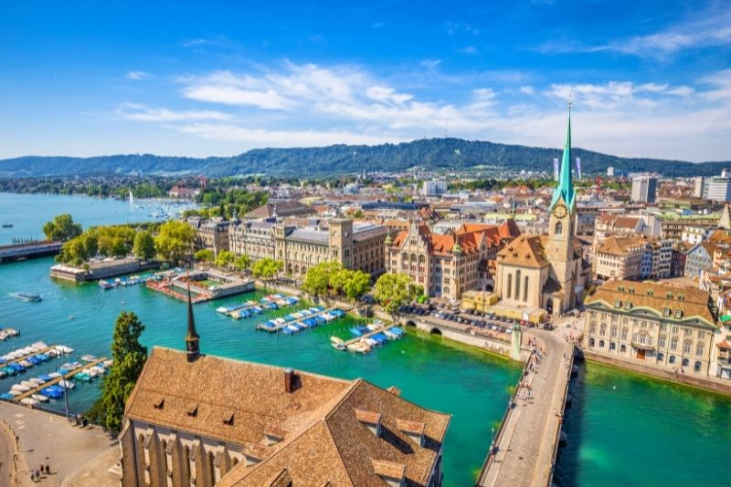
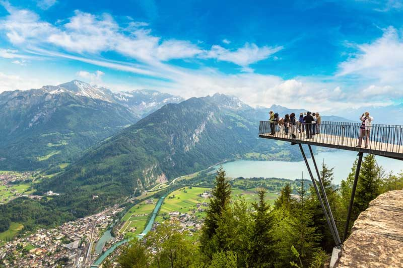

ZURICH
Zurich is Switzerland’s centre of economic life and education. Located in the heart of Europe, the city offers all the modern amenities of a cosmopolitan metropolis, without sacrificing its natural side. Zurich has for years ranked among the world’s top cities in terms of quality of life. It is a boutique city that offers everything that implies, albeit in small and exquisite format

INTERLAKE
By the beginning of the 19th century Interlaken in the Bernese Oberland had already become renowned for its impressive mountain scenery. Famous contemporaries such as Johann Wolfgang von Goethe and Felix Mendelssohn traveled in these mountains. Interlaken's success as a tourist destination was further enhanced by the completion of the Bernese Oberland Railway in 1890 and the Jungfrau Railway in 1912.
As a vacation destination and convention location of international importance, Interlaken is an ideal starting point for countless excursions. Over 45 mountain railways, cable cars, chair lifts and ski lifts lead to 200 kilometers of pistes and a dense network of hiking trails. Excursion ships, including historic paddle steamers, ply the waters of Lake Thun and Lake Brienz.